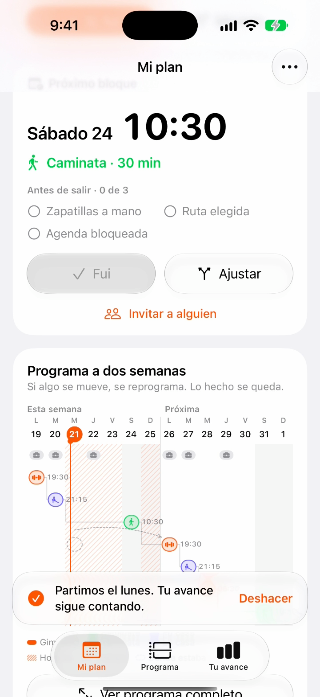
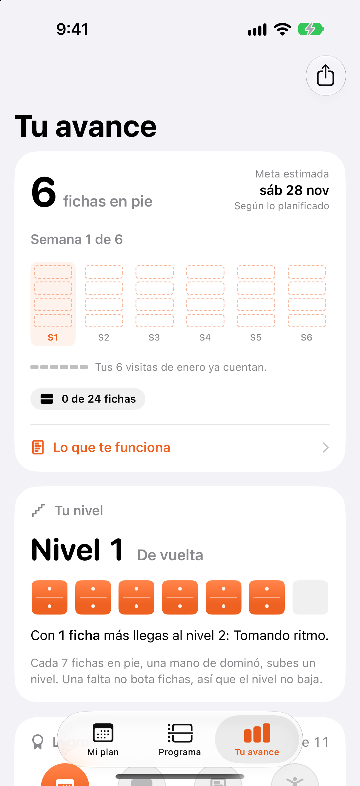
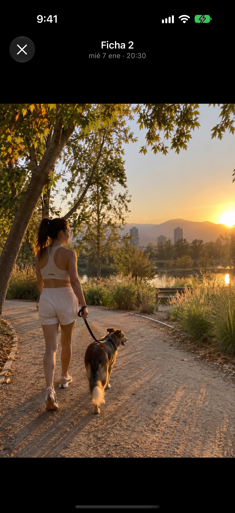
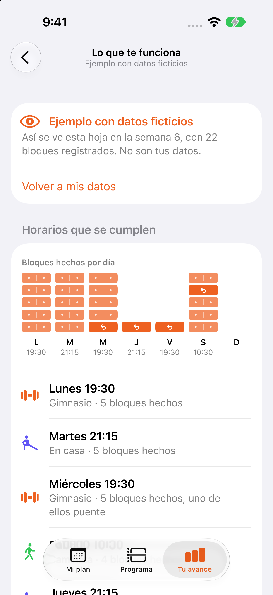
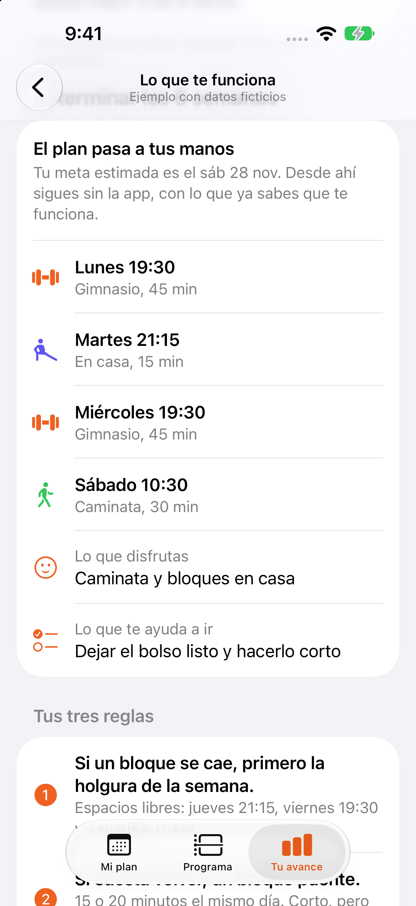
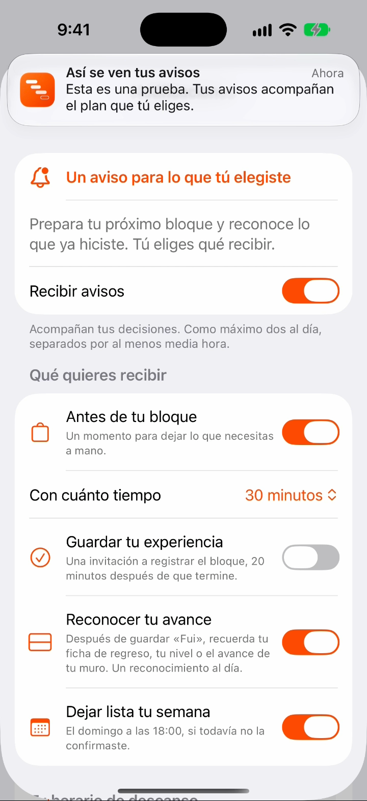

Dominó
Hacer espacio para moverte.
Un plan que se adapta a tu semana.
Un avance que sigue contigo.
Hackatón Señales de Makana · Caso 01: Camila
Juan Pablo Meniconi
Empieza, entonces, por las cosas pequeñas.
Epicteto
Preparando tu plan…
Camila, 34 años, jefa de proyectos en una constructora
Quiere volver a sentirse bien.
Le gustaría hacer del movimiento parte de su vida. Después de una pausa, le cuesta encontrar cómo retomar.
Una semana que cambia
Reuniones que se alargan y días que terminan tarde.
Un objetivo propio
Sentirse bien en su cuerpo y hacer espacio para sí misma.
- 6
Visitas que ya cuentan
Una historia que puede seguir construyendo.
Nuestra lectura
Una forma de planificar que ya conoce.
Acomoda los próximos pasos al tiempo disponible.
Las seis de enero siguen contando.Cada sesión realizada suma una ficha.
Acomodar lo que viene. Conservar lo que ya hizo.
A veces también nos pasa
El ejercicio queda para después
- 01
Se alarga el trabajo
La reunión termina más tarde de lo pensado.
- 02
Queda algo pendiente
Un video por terminar. Un proyecto que queremos avanzar.
- 03
Lo dejamos para mañana
La caminata vuelve a ser lo que movemos del calendario.
Dominó ayuda a encontrar un próximo paso que sí quepa.
La solución
Un plan que se adapta contigo.
-
Holgura
Mover el bloque a un espacio libre de la misma semana.
Conserva la fecha del programa
-
Bloque puente
Una sesión breve para retomar el movimiento.
Una sesión hecha suma una ficha
-
Efecto dominó
Reorganizar los próximos bloques, respetando la carga semanal.
Actualiza la fecha del programa
- Camila confirma cada cambio.
- Lo que ya hizo permanece.
Su semana real
Su plan encaja en su semana.
Dominó se conecta a su Calendario y encuentra espacio para moverse.
En la carta Gantt, una flecha une el horario original con el nuevo.
Invita por WhatsApp
Comparte un bloque con alguien cercano.
Vista previa del mensaje
¿Te sumas el sábado 24 a las 10:30? Voy a caminar 30 minutos. Si no puedes, no pasa nada: igual voy.

Del plan a la acción, en su iPhone
Un paso posible. Un avance real.
Respaldo de la demo
Tu avance
Su avance se hace visible.
-
Cada sesión suma
Una nueva ficha. Un nivel que crece con las sesiones realizadas.
Lo hecho permanece.
-
Momentos que quedan
Puede guardar una foto de la sesión y volver a ese momento.
Una historia propia.
Modo juego · Tu progreso, ciclo a ciclo.28 días · Una ficha por día · Tu propio récord
Cuando termina el programa
Descubrir qué le funciona.
Con sus registros, Camila reconoce los horarios que le acomodan, lo que disfruta y qué la ayuda. Al terminar el programa, puede guardar su propio manual.
- Encontrar sus horarios más viables.
- Reconocer las ayudas que le sirven.
- Llevar ese aprendizaje a lo que viene.
Camila decide qué guardar y compartir.


Qué dejamos fuera
Cuidar la continuidad.
Toca una decisión para verla en la app.
- Camila elige si recibe avisos y cuáles.
El descanso y la frecuencia se respetan. - Cada sesión permanece en su historia.
Un día sin ficha no aparece como falta. - Camila decide a quién invitar.
Lo que comparte no muestra faltas.
También quedan fuera de esta versiónRutinas, nutrición, wearables, cuentas y servidor.

Cómo sabríamos si funciona
¿Camila vuelve y lo sostiene?
- Tiempo de regresoentre una pausa y la siguiente sesión
- Frecuenciapor semana, de la 1 a la 6
- Permanenciaen la semana 12
Próximo paso: un piloto con grupo de comparación. Estas son las métricas que proponemos evaluar.
Apoyo · Acompañar el plan
Un aviso para
cada momento.
Camila elige qué recibe y cuándo.
Ejemplos de avisos en distintos momentos.